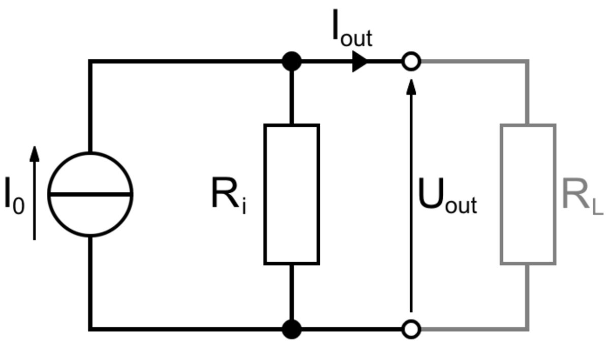
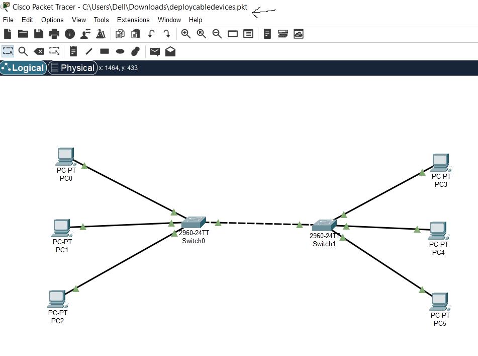
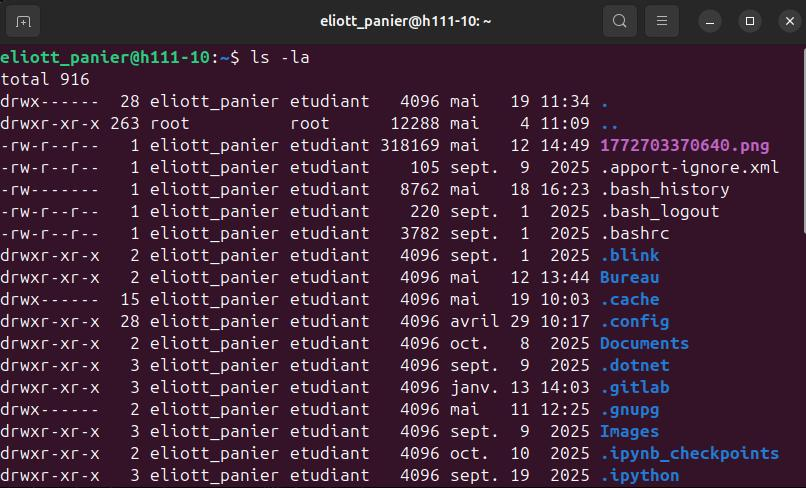
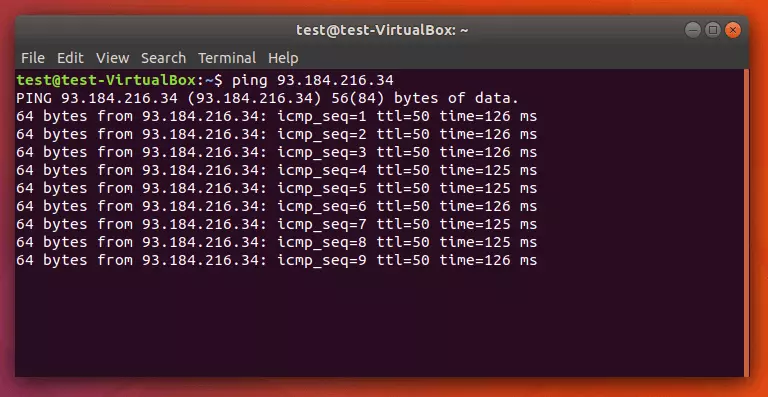
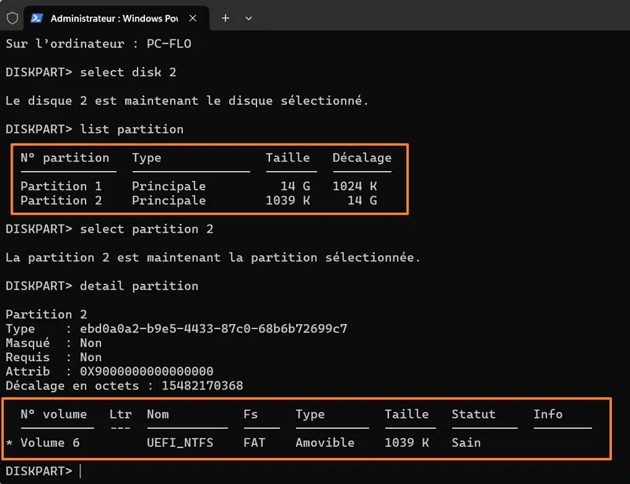

Bloc de Compétences 1
Administrer les réseaux et l'Internet
Démarche réflexive et analytique sur la gestion des infrastructures, des systèmes d'exploitation, le routage dynamique et les services réseaux avancés.
AC21.01 // Niveau 2
 [Capture Voisinage OSPF & Table de Routage]
[Capture Voisinage OSPF & Table de Routage]
Configurer et dépanner le routage dynamique dans un réseau
- Ce que j'ai fait : Déploiement et dépannage du protocole de routage dynamique OSPF (mono et multi-aires), configuration d'interfaces passives et gestion de l'agrégation de liaisons avec EtherChannel (LACP).
- Pourquoi je l'ai fait : Pour assurer la redondance et la convergence automatique des routes en cas de panne de lien physique dans une topologie d'entreprise.
- Comment je l'ai fait : Configuration en CLI Cisco sous Packet Tracer et GNS3, vérification des états d'adjacence via
show ip ospf neighboret inspection de la table de routage. - Mes difficultés : Diagnostiquer une absence d'adjacence causée par un décalage de masques de sous-réseau et de timers Hello/Dead sur un lien point-à-point.
- Ce que j'en ai appris : Le routage dynamique requiert une cohérence absolue des paramètres d'interface pour converger sans instabilité.
- Ce que je ferais autrement : Définir explicitement les Router-ID à l'aide d'adresses Loopback stables dès le départ de la configuration.
Trace Pertinente
[Capture Voisinage OSPF & Table de Routage]
AC21.02 // Niveau 2
 [Statut HSRP & Application ACL Éclose]
[Statut HSRP & Application ACL Éclose]
Configurer et expliquer une politique simple de QoS et les fonctions de base de la sécurité d'un réseau
- Ce que j'ai fait : Implémentation du protocole de redondance de passerelle HSRP avec tracking d'interface, mise en place d'ACLs étendues pour filtrer le trafic inter-VLAN et sécurisation des ports d'accès (Port-Security).
- Pourquoi je l'ai fait : Pour éviter toute rupture de service pour les postes clients lors de la défaillance d'un routeur et cloisonner les accès conformément à la politique de sécurité.
- Comment je l'ai fait : Paramétrage des priorités HSRP et du mode préemption, écriture de listes d'accès nommées et application en entrée des interfaces virtuelles de commutation (SVI).
- Mes difficultés : Positionner judicieusement les ACLs au plus près de la source sans bloquer involontairement les flux d'administration légitimes (SSH/SNMP).
- Ce que j'en ai appris : La haute disponibilité réseau n'est efficace que si le basculement logique s'accompagne d'un contrôle strict des flux autorisés.
- Ce que je ferais autrement : Rédiger une matrice de flux formelle avant de coder les règles de filtrage sur les équipements.
Trace Pertinente
[Statut HSRP & Application ACL Éclose]
AC21.03 // Niveau 2
 [Topologie vSwitch ESXi & Conteneurs Docker]
[Topologie vSwitch ESXi & Conteneurs Docker]
Déployer des postes clients et des solutions virtualisées adaptées à une situation donnée
- Ce que j'ai fait : Déploiement et gestion de machines virtuelles sur VMware ESXi et VirtualBox, configuration de commutateurs virtuels (vSwitch) et isolation de micro-services avec des conteneurs Docker.
- Pourquoi je l'ai fait : Pour optimiser les ressources matérielles, cloisonner les environnements d'exécution et garantir un déploiement rapide et reproductible.
- Comment je l'ai fait : Définition des quotas vCPU/RAM, création de ponts réseaux isolés et écriture de fichiers
docker-compose.ymlmulti-conteneurs. - Mes difficultés : Paramétrer le routage virtuel et les redirections de ports entre l'hôte physique et les conteneurs placés sur des bridges personnalisés.
- Ce que j'en ai appris : La conteneurisation apporte une agilité supérieure à la virtualisation lourde pour les architectures orientées services.
- Ce que je ferais autrement : Automatiser l'installation des systèmes invités via des images personnalisées et des scripts de configuration non interactifs.
Trace Pertinente
[Topologie vSwitch ESXi & Conteneurs Docker]
AC21.04 // Niveau 2
 [Fichiers de Zones Bind9 & Requête Dig Valide]
[Fichiers de Zones Bind9 & Requête Dig Valide]
Déployer des services réseaux avancés
- Ce que j'ai fait : Installation et configuration complète d'un serveur DNS faisant autorité (Bind9), d'un serveur Web Apache avec plusieurs VirtualHosts et de services de messagerie (Postfix/Dovecot).
- Pourquoi je l'ai fait : Pour mettre en place les services centraux indispensables à la communication et à la résolution de noms au sein d'un domaine d'entreprise.
- Comment je l'ai fait : Rédaction des fichiers de zones directes et inverses sous Debian/Ubuntu, configuration des hôtes virtuels dans
/etc/apache2/sites-available/et validation pardigetnslookup. - Mes difficultés : Gérer la cohérence entre les enregistrements PTR de résolution inverse et les champs MX lors des tests d'acheminement de courrier.
- Ce que j'en ai appris : Les services réseaux fonctionnent en dépendance étroite ; un dysfonctionnement DNS bloque l'ensemble des services applicatifs associés.
- Ce que je ferais autrement : Tester les fichiers de zone avec
named-checkzoneavant d'appliquer tout redémarrage du démon Bind9.
Trace Pertinente
[Fichiers de Zones Bind9 & Requête Dig Valide]
AC21.05 // Niveau 2
 [Topologie Multi-AS & Session eBGP Établie]
[Topologie Multi-AS & Session eBGP Établie]
Identifier les réseaux opérateurs et l'architecture d'Internet
- Ce que j'ai fait : Étude des principes de routage inter-domaines avec BGP, modélisation de Systèmes Autonomes (AS) et analyse des topologies de raccordement opérateur (Transit, Peering, MPLS).
- Pourquoi je l'ai fait : Pour comprendre comment les réseaux d'entreprises privées s'interconnectent et échangent des tables de routage à l'échelle mondiale.
- Comment je l'ai fait : Configuration de sessions eBGP sous simulateur, manipulation des attributs de chemin (AS-Path, Next-Hop) et traçage via des outils Looking Glass.
- Mes difficultés : Intégrer la logique des attributs BGP et leur ordre de priorité dans le choix de la meilleure route vers une destination externe.
- Ce que j'en ai appris : L'architecture d'Internet repose sur un équilibre contractuel et technique strict entre opérateurs géré par les politiques de filtrage BGP.
- Ce que je ferais autrement : Poser systématiquement un schéma logique des échanges de préfixes avant de configurer les sessions de voisinage.
Trace Pertinente
[Topologie Multi-AS & Session eBGP Établie]
AC21.06 // Niveau 2
 [Suivi Kanban & Historique des Commits Git]
[Suivi Kanban & Historique des Commits Git]
Travailler en équipe pour développer ses compétences professionnelles
- Ce que j'ai fait : Réalisation de projets d'infrastructure d'envergure en équipe lors des SAÉ du semestre 3, répartition des responsabilités techniques et centralisation des livrables via GitLab.
- Pourquoi je l'ai fait : Pour acquérir les réflexes de collaboration propres aux équipes d'exploitation réseau et respecter les jalons d'un projet complexe.
- Comment je l'ai fait : Gestion d'un tableau Kanban partagé, revues croisées des configurations réseau et réunions de cadrage au début de chaque séance.
- Mes difficultés : Assurer la compatibilité entre l'adressage IP défini par un membre de l'équipe et les services configurés par un autre sans rupture de planning.
- Ce que j'en ai appris : La documentation partagée et la concertation préalable sont aussi importantes que la réalisation technique pour la réussite d'un projet collectif.
- Ce que je ferais autrement : Rédiger un Document d'Architecture Technique (DAT) initial pour acter définitivement les interfaces et les conventions.
Trace Pertinente
[Suivi Kanban & Historique des Commits Git]
AC11.01 // Niveau 1
Maîtriser les lois fondamentales de l'électricité afin d'intervenir sur des équipements de réseaux et télécommunications
- Ce que j'ai fait : J'ai étudié les circuits électriques, manipulé des multimètres en TP et assisté à des dépannages concrets sur site.
- Pourquoi je l'ai fait : Pour acquérir les bases physiques indispensables avant d'intervenir en sécurité sur des équipements physiques de réseaux et télécoms.
- Comment je l'ai fait : En mobilisant les ressources théoriques du module R1.04 (Électronique) et en appliquant les lois d'Ohm et de Kirchhoff lors des mesures de tension/courant.
- Mes difficultés : Réussir la transition entre les calculs théoriques complexes sur papier et les mesures physiques fluctuantes à l'oscilloscope.
- Ce que j'en ai appris : La rigueur des lois électriques conditionne directement la sécurité des techniciens et l'intégrité du matériel informatique.
- Ce que je ferais autrement : Mieux documenter et revérifier mes schémas de montage avant de mettre le circuit sous tension.
Trace Pertinente

[Schéma de circuit / Mesures R1.04]
AC11.02 // Niveau 1
 [Tableau d'encapsulation / Trame réseau]
[Tableau d'encapsulation / Trame réseau]
Comprendre l'architecture et les fondements des systèmes numériques, les principes du codage de l'information, des communications et de l'Internet
- Ce que j'ai fait : J'ai étudié les principes du codage de l'information (binaire, hexadécimal), l'architecture des ordinateurs et les bases d'Internet.
- Pourquoi je l'ai fait : Pour assimiler la manière dont les données transitent, sont encapsulées et sont traitées à travers les équipements de télécommunication.
- Comment je l'ai fait : Via les ressources des modules d'architecture et d'initiation aux réseaux (R1.01/R1.02), en découpant des trames réseau reçues.
- Mes difficultés : Intégrer la logique des masques de sous-réseau variables (VLSM) et la conversion rapide des adresses IPv4/IPv6.
- Ce que j'en ai appris : Que toute la couche haute d'Internet repose sur une encapsulation binaire stricte et standardisée.
- Ce que je ferais autrement : Pratiquer des exercices de conversion et de calculs de masques de manière plus régulière pour gagner en automatisme.
Trace Pertinente
[Tableau d'encapsulation / Trame réseau]
AC11.03 // Niveau 1
Configurer les fonctions de base du réseau local
- Ce que j'ai fait : J'ai conçu des maquettes de réseaux locaux virtuels, configuré des adresses IP, des passerelles et implémenté des VLANs de base.
- Pourquoi je l'ai fait : Pour être capable de simuler et de mettre en œuvre une connectivité locale fonctionnelle inter-équipements conforme à un plan établi.
- Comment je l'ai fait : En manipulant le logiciel Cisco Packet Tracer et des commutateurs physiques lors des TP de la SAÉ 2.01.
- Mes difficultés : Assurer le routage inter-VLAN correct et ne pas oublier d'activer ou d'encapsuler les ports en mode Trunk.
- Ce que j'en ai appris : Le moindre décalage d'un seul chiffre dans un masque ou une passerelle détruit la connectivité de toute une zone.
- Ce que je ferais autrement : Rédiger un tableau d'adressage strict sur papier avant de lancer la moindre commande de configuration dans le terminal Cisco.
Trace Pertinente

[Topologie Packet Tracer annotée]
AC11.04 // Niveau 1
Maîtriser les rôles et les principes fondamentaux des systèmes d'exploitation afin d'interagir avec ceux-ci pour la configuration et l'administration des réseaux et services fournis
- Ce que j'ai fait : J'ai manipulé les architectures de gestion des processus, des fichiers et optimisé des configurations systèmes avancées (Windows/Linux).
- Pourquoi je l'ai fait : Pour comprendre comment interagir avec le système d'exploitation hôte afin d'y configurer par la suite des services réseaux ou de sécurité.
- Comment je l'ai fait : En exploitant les cours de base des OS (R1.08), en utilisant les terminaux PowerShell et Bash pour automatiser ou vérifier des paramètres.
- Mes difficultés : Mémoriser la syntaxe stricte et les droits d'accès utilisateur sous Linux (chmod, chown) pour la sécurisation des répertoires.
- Ce que j'en ai appris : L'administration d'un réseau passe inévitablement par une maîtrise fine de la console système et du fonctionnement du noyau de l'OS.
- Ce que je ferais autrement : Utiliser de manière systématique des machines virtuelles isolées (VMware) pour tester mes modifications système sans impacter la machine physique.
Trace Pertinente

[Capture CLI Linux / Gestion Processus]
AC11.05 // Niveau 1
Identifier les dysfonctionnements du réseau local et savoir les signaler
- Ce que j'ai fait : J'ai analysé des pannes réseau simulées, tracé des coupures de liens et rédigé des rapports d'incidents clairs.
- Pourquoi je l'ai fait : Pour acquérir les réflexes méthodologiques d'un technicien support capable d'isoler un problème sur la couche physique ou logique.
- Comment je l'ai fait : En utilisant les outils de diagnostic ICMP classiques (
ping,traceroute,nslookup) et en inspectant les logs d'erreurs en TP. - Mes difficultés : Distinguer rapidement si l'origine d'un problème de résolution de nom venait d'un mauvais adressage client ou d'une panne du serveur DNS local.
- Ce que j'en ai appris : Qu'un bon diagnostic doit suivre scrupuleusement l'ordre des couches du modèle OSI (du physique vers l'application) pour faire gagner du temps à l'équipe.
- Ce que je ferais autrement : Structurer mes rapports d'anomalies de manière plus standardisée en utilisant des fiches d'incidents types.
Trace Pertinente

[Résultats Commandes Ping & Traceroute]
AC11.06 // Niveau 1
Installer un poste client, expliquer la procédure mise en place
- Ce que j'ai fait : J'ai assemblé physiquement des postes, configuré les paramètres réseaux hôtes, installé des suites applicatives et documenté mon protocole.
- Pourquoi je l'ai fait : Pour assurer le déploiement conforme et standardisé d'un poste informatique utilisateur au sein d'une infrastructure d'entreprise.
- Comment je l'ai fait : En appliquant les bonnes pratiques de maintenance informatique matérielle et logicielle, complétées par la rédaction d'un guide utilisateur pas-à-pas.
- Mes difficultés : Expliquer les étapes techniques complexes avec des termes simples, clairs et accessibles pour un utilisateur non technicien.
- Ce que j'en ai appris : La rédaction d'une procédure claire est aussi importante que l'installation technique elle-même pour assurer la pérennité du parc informatique.
- Ce que je ferais autrement : Créer une checklist simplifiée en début de document pour permettre une vérification rapide en fin d'installation.
Trace Pertinente

[Extrait de Procédure Technique Rédigée]